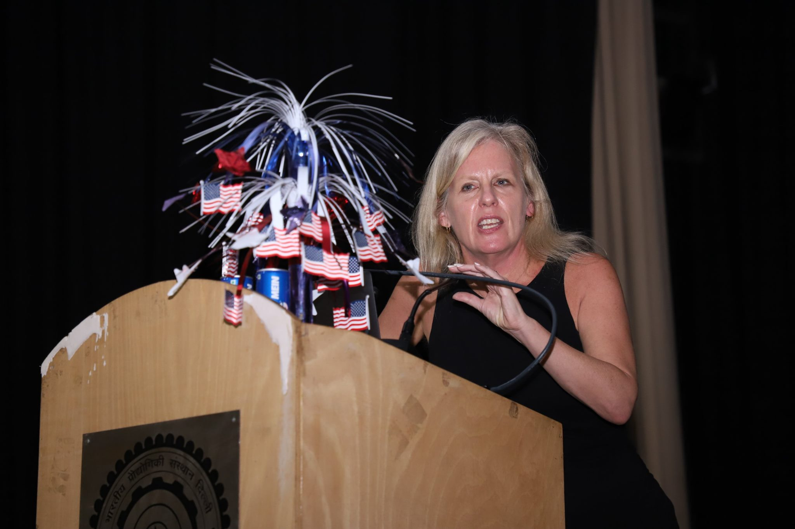
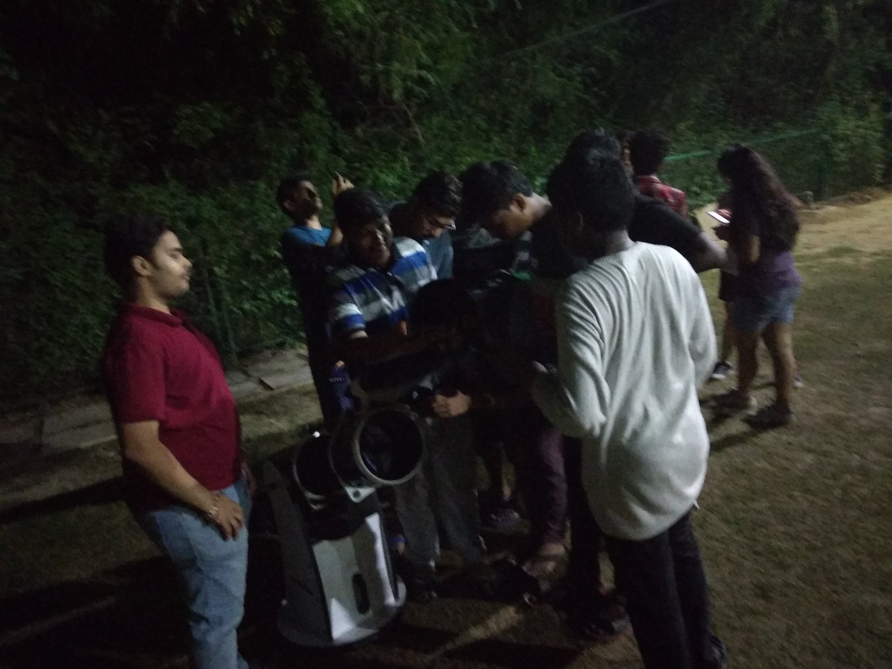
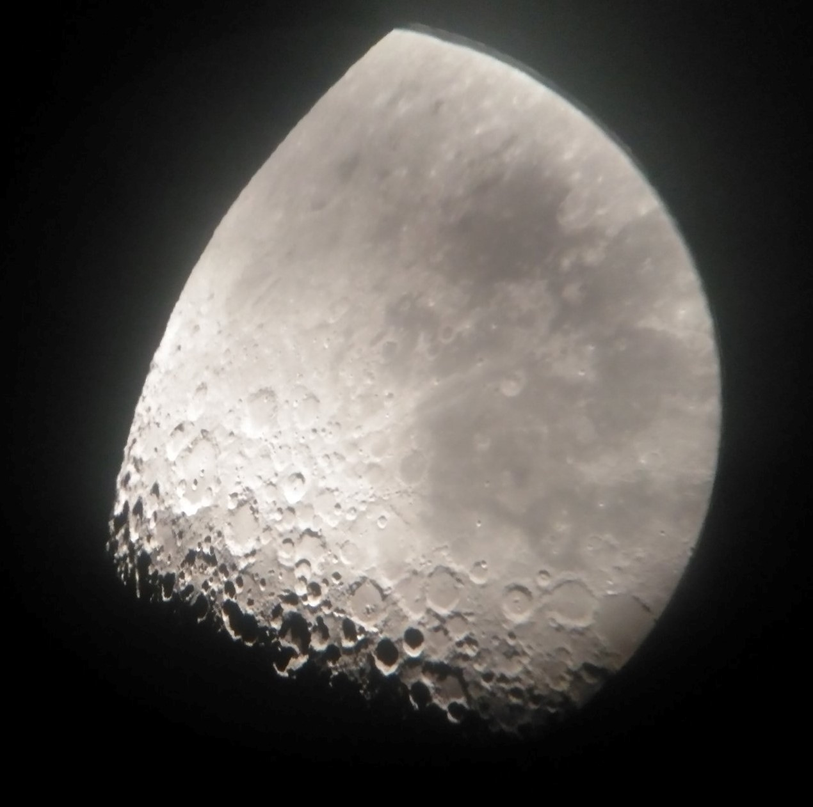
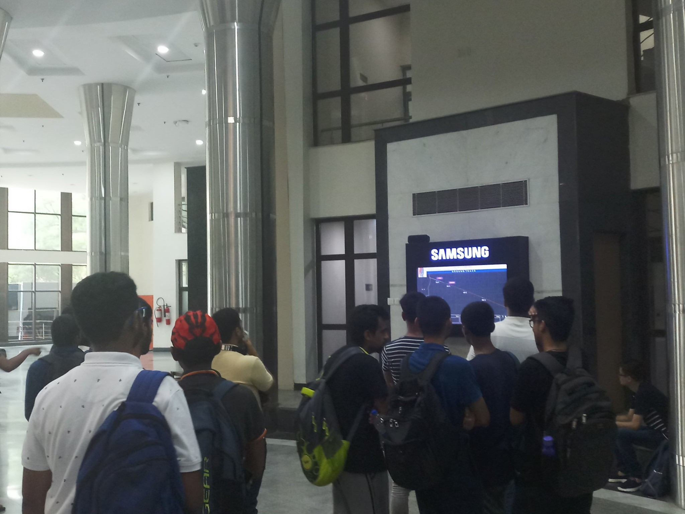

Talk by Ann Devereaux on the 30th of September at 2 PM. Ann works with NASA's Jet propulsion laboratory and was closely involved with the curiosity rover which launched in 2011 and works on its cousin project, which is on stand by for
launch in 2020.

Moon gazing session at the SAC lawns where students got to use our Dobsonian telescope and observed the South Pole-Aitken, one of the largest craters on the moon!

Moon through our Dobsonian telescope

Livestream of ISRO's launch of Chandrayaan-2. It was the first-ever mission to soft-land this near to the lunar south pole.